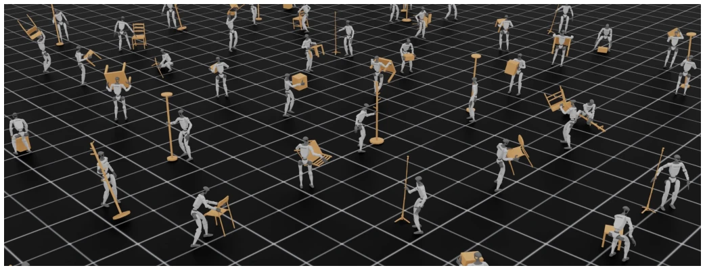
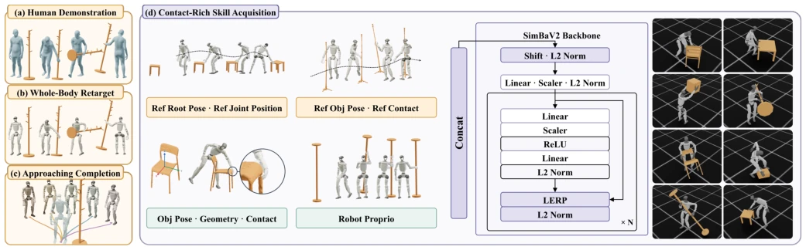
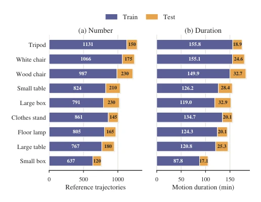
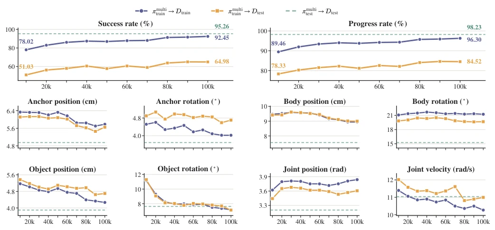
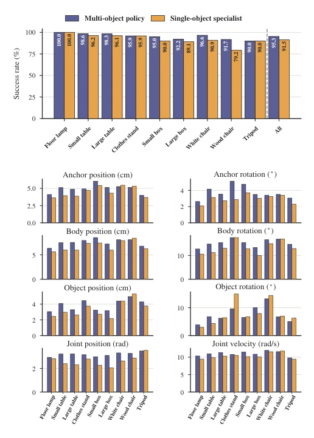
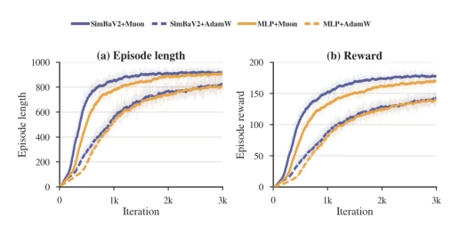

The name WEAVE is quite artistic, attempting to master whole-body dexterous manipulation of humanoid robots with a single strategy, which sounds promising. It converts human demonstrations into reference trajectories and then trains an RL policy, with a 92.5% success rate in simulation that is indeed impressive. However, do not get too excited, as this is entirely simulation; real-world deployment must still face the harsh reality of sim2real. More critically, the policy relies completely on reference trajectories, acting like a "high-end parrot", lacking high-level planning capabilities and unable to make autonomous decisions. Nevertheless, it can unify multi-object training, outperforming single-object experts, and the dataset is generously released, which deserves a commendation.
Humanoid robots must coordinate walking, balance, and dexterous grasping to operate in human environments. Existing methods exhibit significant fragmentation: motion retargeting [1]-[5] only manages whole-body motion, ignoring finger contact; dexterous manipulation [6]-[11] mostly targets fixed bases or simulated characters, lacking whole-body balance. Although human demonstrations are beneficial, morphological differences lead to contact failure. Establishing a unified strategy that achieves stable contact while maintaining balance is the core challenge.

Figure 1. Policy rollout examples with WEAVE. We learn a unified policy for whole-body dexterous loco-manipulation from captured human–object interaction. Parallel simulation rollouts showcase the one policy coordinating locomotion and dexterous manipulation across diverse everyday objects.
The framework is divided into two stages. First, construct reference trajectories: using whole-body inverse kinematics retargeting combined with contact-aware hand optimization to minimize contact distance and maximize force closure quality; then use Kimodo [12] to complete approach actions. Second, train the policy: unified policy inputs include proprioception, object geometry, and reference trajectories, using the SimBaV2 network. The reward function includes tracking error, contact matching, anti-slip, and joint limits, where contact matching applies only to non-neutral labels. The optimizer selects Muon to improve sampling efficiency. The PPO algorithm jointly trains multi-object interaction in simulation, with the Inspire hand controlling only proximal joints. An asymmetric Actor-Critic is adopted, with the Critic containing privileged observations.

Figure 2. Overview of WEAVE. (a) Captured human–object interactions provide paired SMPL-X body motion and object trajectories. (b) Whole-body inverse kinematics retargets each interaction while preserving the hand–object contacts and the object motion. (c) Kimodo [12] synthesizes locomotion prefixes that approach the initial interaction pose from different azimuths, producing several complete references from one captured sequence. (d) A unified reference- conditioned policy is trained in simulation across all objects and interaction clips.

Figure 3. Reference-motion dataset distribution. Per-object composition of the training and test splits in terms of (a) the number of reference trajectories and (b) total motion duration.
Tested on 9 objects, training set success rate 92.5%, unseen sequence 65%. Multi-object joint training outperforms single-object experts, demonstrating that shared policies can generalize. Optimizer ablation shows Muon converges faster than AdamW. Released a dataset of approximately 9000 rollouts. However, evaluation was conducted only in simulation, lacking real-world validation, and dependency on reference trajectories limits autonomy. The low test set success rate is due to approach direction distribution differences (K=3 vs K=5). Object rotation error decreased from 11.17 degrees to 7.18 degrees, and position error decreased to 4.27 cm.

Figure 4. Evaluation against training iterations. Success rate (top) and tracking errors (bottom) for πmulti train evaluated on Dtrain and on Dtest. The dashed line is πmulti test evaluated on Dtest, which serves as an oracle for measuring generalization.

Figure 5. Joint multi-object training versus object-specific specialists. Top: per-object and pooled success rates on Dtest, where the pooled result is weighted by the number of evaluation trajectories. Bottom: tracking errors computed over rollouts.

Figure 6. Sample-efficiency ablation on the small-table task. We compare four combinations under a common training budget of 3,000 iterations. Light curves show the raw mean episode length and reward, while dark curves show exponential moving averages with a span of 50 iterations.